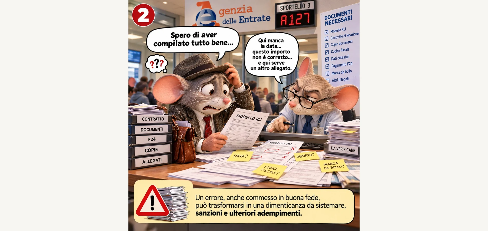

In sintesi
Quattro vignette raccontano il percorso di un proprietario tra registrazione contratto di locazione, sportello Agenzia delle Entrate, rischio errori sul modello RLI e valore di un’agenzia immobiliare che gestisce locazioni ogni giorno. Non sostituisce commercialista o consulente fiscale: aiuta a capire perché affidarsi a chi fa questo lavoro riduce tempo perso e sorprese tardive.
Affittare un immobile a Padova o in provincia non finisce con le chiavi: restano adempimenti, documenti e registrazione. Molti proprietari partono convinti: «È solo una formalità, ci vado io». La storia che segue — con i nostri improbabili protagonisti a quattro zambe — è quella che vediamo spesso in agenzia, raccontata con ironia ma senza sminuire la fatica reale.
Se cercate la guida tecnica sui termini e sul portale ADE, abbinate questo racconto a registro contratti affitto Padova 2026. Se volete capire come Righetto accompagna i locatori, partite da servizio locazioni e dall’hub proprietario immobile.
Scena 1
«Ci vado io, cosa ci vuole?»
Il signor Topo — padrone di casa, cartella sotto il braccio, contratto di locazione appena firmato — si presenta all’ingresso dell’Agenzia delle Entrate con l’aria di chi ha già risolto tutto. «Per registrare un contratto? Ci vado io… cosa ci vorrà mai!»
La fila davanti a lui racconta un’altra storia: colleghi in coda dalle 8:15, altri «dalla settimana scorsa». Lui scopre che quella che sembrava una commissione da mezz’ora può diventare ore — spesso spezzate tra permessi dal lavoro, parcheggio, sportelli e documenti da ricontrollare.
Quello che in apparenza è un semplice adempimento si trasforma in tempo perso, spostamenti, checklist di allegati e procedure da conoscere. Non è questione di «non essere bravi»: è che il sistema chiede precisione e continuità, mentre il proprietario ha già un lavoro, una famiglia e un immobile da gestire.
A Padova e nel Padovano molti locatori combinano lavoro dipendente e primo affitto: chiedere permessi, riorganizzare riunioni, tornare allo sportello con un documento mancante significa che l’affitto — che dovrebbe essere reddito — diventa un secondo impiego non retribuito. Ecco perché parliamo di convenienza nel senso di vita quotidiana, non solo di euro: delegare non è pigrizia, è scelta di priorità.
Cosa impariamo dalla prima scena
- La registrazione contratto non è un click: richiede preparazione e tempo fisico.
- Documenti, copie, moduli e ordine di presentazione contano quanto la buona volontà.
- Anticipare il carico aiuta a non sottovalutare l’affitto come «reddito passivo automatico».
Scena 2
«E se sbaglio qualcosa?»
Allo sportello il tono cambia. «Spero di aver compilato tutto bene…» — dice il proprietario, mentre l’operatore scorre il modello RLI e segnala date mancanti, importi da verificare, allegati assenti. Post-it gialli: data? codice fiscale? marca da bollo?
Anche un errore commesso in buona fede, una dimenticanza su un campo o un documento non allineato al contratto firmato può aprire una strada di correzioni successive o di regolarizzazione. Non entriamo qui in numeri di sanzioni o in casi giuridici: ogni situazione va letta con commercialista o consulente abilitato. Il messaggio narrativo è più semplice: sbagliare o dimenticare costa nervi e tempo, anche molto dopo.

La gestione immobiliare non è solo trovare inquilino e incassare canone: è tenere insieme contratto, registrazione, adempimenti fiscali collegati (in base al regime scelto) e archivio ordinato. Chi affronta tutto da solo, di solito, lo fa una o due volte nella vita; chi lavora in agenzia immobiliare lo fa ogni settimana.
Il contratto di locazione abitativo o commerciale va letto insieme alla registrazione: canone, durata, deposito cauzionale, clausole manutenzione, comunicazioni al condomino. Un dato errato sul modello telematico può non coincidere con quanto pattuito tra le parti — e allora nasce il lavoro di allineamento. Meglio prevenire in fase di redazione che correggere sotto pressione.
Per approfondire obblighi e tempi in linguaggio tecnico: canone concordato Padova, affittare casa da proprietario, contratto affitto Padova (sempre con commercialista per la vostra situazione).
Attenzione senza allarmismo
Non serve spaventarsi: serve metodo. Controllare dati anagrafici, canone, durata, date di decorrenza, allegati richiesti dal portale e coerenza con quanto firmato è il minimo sindacale. Se qualcosa non torna, meglio fermarsi prima di inviare che ricevere comunicazioni mesi dopo.
Scena 3
«Lasciate fare a noi»
Stesso protagonista, altra scena: ufficio Righetto, luce calda, cartelle etichettate — contratti, registrazioni, cedolare secca, adempimenti, consulenza. L’agente mostra il contratto di locazione con timbro «controllato e registrato». «Quindi posso stare tranquillo?» «È proprio questo il nostro lavoro.»
Qui non c’è magia: c’è routine professionale. Verifica documenti, coerenza dati, supporto nella registrazione telematica, promemoria sulle scadenze, canale unico per domande del proprietario. Il locatore torna a occuparsi della propria attività — o del riposo — mentre la parte burocratica segue un percorso tracciato.
Chi vende trova in Righetto un alleato; chi affitta merita lo stesso rigore: selezione inquilino, contratto leggibile, registrazione curata, dialogo con il proprietario senza listini di mediazione pubblicati online (compenso da concordare in sede, come per tutti i servizi).
Cosa fa concretamente un’agenzia specializzata in locazione
- Controllo della documentazione del locatore e dell’immobile.
- Verifica coerenza tra contratto, dati catastali e moduli di registrazione.
- Gestione degli adempimenti collegati al percorso di locazione.
- Registrazione del contratto secondo le modalità previste dall’Agenzia delle Entrate.
- Consulenza operativa sul flusso — con rimando a commercialista per scelte fiscali (cedolare secca, IRPEF, ecc.).
Righetto opera a Limena, Padova e in 101 comuni dal 2000: conosce il territorio, le abitudini di mercato e la differenza tra «affitto veloce» e «affitto regolare».
Scena 4
«La sorpresa arriva dopo dodici mesi»
Un anno dopo. Tazza «Un anno fa tutto tranquillo…», calendario segnato «12 mesi dopo», campanello. Il postino consegna una busta: richiesta di ravvedimento — il protagonista crede di aver fatto tutto a suo tempo. «Ma… io quel contratto l’avevo registrato un anno fa!»
La vignetta usa ironia per dire una cosa seria: gli errori o le irregolarità non sempre bussano subito. Possono emergere con comunicazioni successive, verifiche incrociate, necessità di integrare documenti o regolarizzare adempimenti. Non speculiamo su importi: dipende dal caso. Il takeaway è la prevenzione: meno zone grigie all’inizio, meno stress quando arriva la posta.
Le sorprese lasciamole ai compleanni. Non ai contratti di locazione.
Dal «ci penso io» al «ci pensiamo noi»
La storia del signor Topo non è una condanna al fai-da-te: è un invito alla consapevolezza. Affittare bene significa anche registrare bene, archiviare, rispettare scadenze e chiedere aiuto quando la pratica supera il tempo disponibile.
Se gestite da soli, armatevi di pazienza, portale ufficiale ADE e supporto fiscale. Se preferite delegare la parte operativa, un’agenzia che vive di locazione ogni giorno vi restituisce controllo e prevedibilità — il messaggio che ci teniamo a lasciare è sempre lo stesso:
Più controllo oggi, più serenità domani.
Domande frequenti
Nota: articolo informativo con vignette editoriali (FOTO AI). Non costituisce consulenza legale o fiscale. Per importi, sanzioni e ravvedimento operativo rivolgersi a commercialista e alle fonti ADE.
Ultimo aggiornamento: 7 ottobre 2026.

Gruppo Immobiliare Righetto — Limena e Padova dal 2000.